<!DOCTYPE html>
<html>
</html>
<head>
  <meta charset="utf-8">
  <meta http-equiv="X-UA-Compatible" content="IE=edge">
  <title>我的广州之旅</title>
  <link rel="stylesheet" href="https://use.fontawesome.com/releases/v5.8.1/css/all.css">
  <meta name="description" content="">
  <meta name="viewport" content="width=device-width, initial-scale=1">
  <meta name="robots" content="all,follow">
  <meta name="viewport" content="device-width,initial-scale=1.0">
  <!-- Bootstrap CSS-->
  <link rel="stylesheet" href="vendor/bootstrap/css/bootstrap.min.css">
  <!-- Font Awesome CSS-->
  <link rel="stylesheet" href="vendor/font-awesome/css/font-awesome.min.css">
  <!-- Google fonts - Roboto-->
  <link rel="stylesheet" href="https://fonts.googleapis.com/css?family=Roboto:400,300,700,400italic">
  <!-- owl carousel-->
  <link rel="stylesheet" href="vendor/owl.carousel/assets/owl.carousel.css">
  <link rel="stylesheet" href="vendor/owl.carousel/assets/owl.theme.default.css">
  <!-- theme stylesheet-->
  <link rel="stylesheet" href="css/style.default.css" id="theme-stylesheet">
  <!-- Custom stylesheet - for your changes-->
  <link rel="stylesheet" href="css/custom.css">
  <!-- Favicon-->
  <link rel="shortcut icon" href="img/favicon.png">
  <!-- Magnific Popup core CSS file -->
  <link rel="stylesheet" href="css/magnific-popup.css">
  <link rel="stylesheet" href="css/style.all.css">
  <meta name="vieport" content="width=device-width, initial-scale=1.0">

  <!-- Tweaks for older IEs[if lt IE 9]>
    <script src="https://oss.maxcdn.com/html5shiv/3.7.3/html5shiv.min.js"></script>
    <script src="https://oss.maxcdn.com/respond/1.4.2/respond.min.js"></script><![endif] -->
</head>
<body class="myPage" style="transition: 0.7s;">
  <div id="all">
    <div class="top-bar" style="position:absolute;">
        <h1>这是我的广州之旅</h1>
        <a href="#" class="btn btn-primary">照片墙</a>
    </div>
    <div class="banner-user-picture">
      
    </div>
    <div class="container-fluid" style="z-index:99;position:absolute;top:300px;">
      <div class="content-top-bar" style="background-color:white;">

      </div>
      <div class="row row-offcanvas row-offcanvas-left" style="background-color:white;margin-right:0;margin-left:0;"> 
        <!--   *** SIDEBAR ***-->
        <div id="sidebar" class="col-md-4 col-lg-3 sidebar-offcanvas">
          <div class="sidebar-content">
            <h1 class="sidebar-heading"> <a href="gz-travel.html">广州之旅</a></h1>
            <p class="sidebar-p">广州旅游资源丰富，其中以花城广场、广州塔、白云山、长隆旅游度假区、珠江夜游、陈家祠、宝墨园、沙面、圣心大教堂、岭南印象园、沙湾古镇、越秀公园、南越王博物馆、中山纪念堂、黄埔军校、南沙湿地公园、海珠湖国家湿地公园、从化温泉等景点最为盛名。 </p>
            <p class="sidebar-p">添加更多介绍。 </p>
            <ul class="sidebar-menu">
                <!-- Link-->
                <li class="sidebar-item"><a href="gz-travel.html" class="sidebar-link active">广州之旅</a></li>
                <!-- Link-->
                <li class="sidebar-item"><a href="../person/portfolio.html" class="sidebar-link">个人主页</a></li>
                <!-- Link-->
                <li class="sidebar-item"><a href="contact.html" class="sidebar-link">网站主页</a></li>
            </ul>
            <p class="social">
              <a href="#" data-animate-hover="pulse" class="external facebook">
                  <i class="fa fa-qq"></i>
              </a>
              <a href="#" data-animate-hover="pulse" class="external gplus">
                  <i class="fa fa-weixin"></i>
              </a>
              <a href="#" data-animate-hover="pulse" class="external twitter">
                  <i class="fa fa-weibo"></i>
              </a>
              <a href="#" title="" class="external instagram">
                <i class="fa fa-instagram"></i>
              </a>
              <a href="#" data-animate-hover="pulse" class="email">
                <i class="fa fa-envelope"></i>
              </a>
            </p>
          </div>
        </div>
        <!--   *** SIDEBAR END ***  -->
        <!--   *** PORTFOLIO ***-->
        <div class="col-md-8 col-lg-9 content-column">
          <div class="small-navbar d-flex d-md-none">
            <button type="button" data-toggle="offcanvas" class="btn btn-outline-primary"> <i class="fa fa-align-left mr-2"></i>菜单</button>
            <h1 class="small-navbar-heading"> <a href="gz-travel.html">创造 </a></h1>
          </div>
          <div class="grid row">
            <div class="col-md-6 col-lg-3 grid-item"> 
              <div class="box-masonry">
                <a href="img/portfolio/gzzl/13.jpg" title="" class="box-masonry-image with-hover-overlay pop-up">
                  
                  <div class="box-masonry-hover-text-header">
                    <h4></h4>
                      <div class="box-masonry-desription">
                        <p>早就听说广州是著名的“羊城”，国家中心城市，繁华、节奏快。所以一直想亲自领略一下当地的风土人情，终于在清明节短短的几天假期里得以如愿。 </p>
                      </div>
                  </div>
                </a>
              </div>
            </div>
            <div class="col-md-6 col-lg-3 grid-item"> 
              <div class="box-masonry"> <a href="img/portfolio/gzzl/15.jpg" title="" class="box-masonry-image with-hover-overlay with-hover-icon pop-up">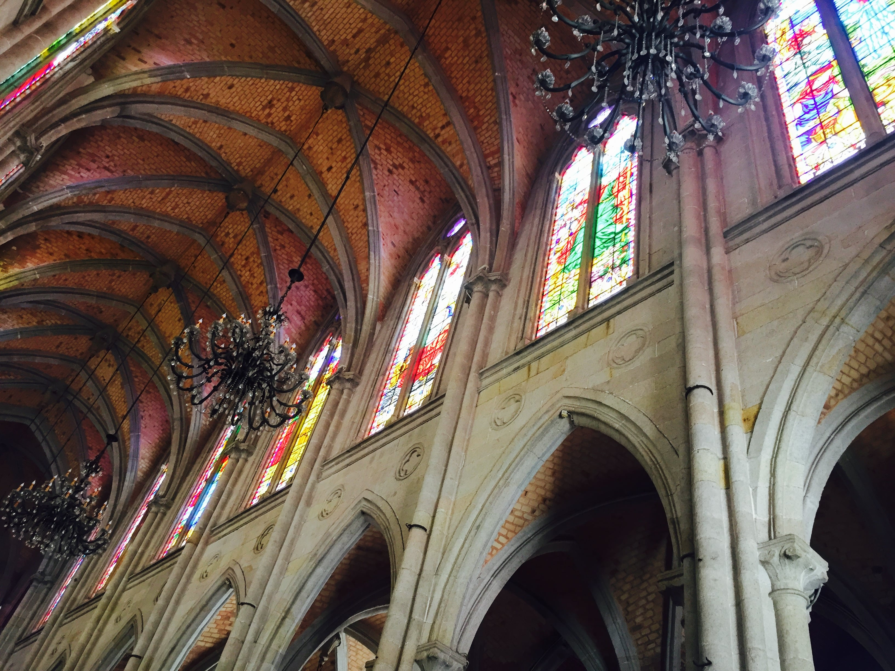</a>
                <div class="box-masonry-text"> 
                  <h4> <a href="#">石室圣心大教堂</a></h4>
                  <div class="box-masonry-desription">
                    <p> 这是广州教区最大的教堂了，是法国人修建的，去的时候因为穿了短裙所以有工作人员在门口给我发了一条丝巾披着，以表示对教会的尊敬。 </p>
                  </div>
                </div>
              </div>
            </div>
            <div class="col-md-6 col-lg-3 grid-item"> 
              <div class="box-masonry"> <a href="img/portfolio/gzzl/14.jpg" title="" class="box-masonry-image with-hover-overlay pop-up with-hover-icon">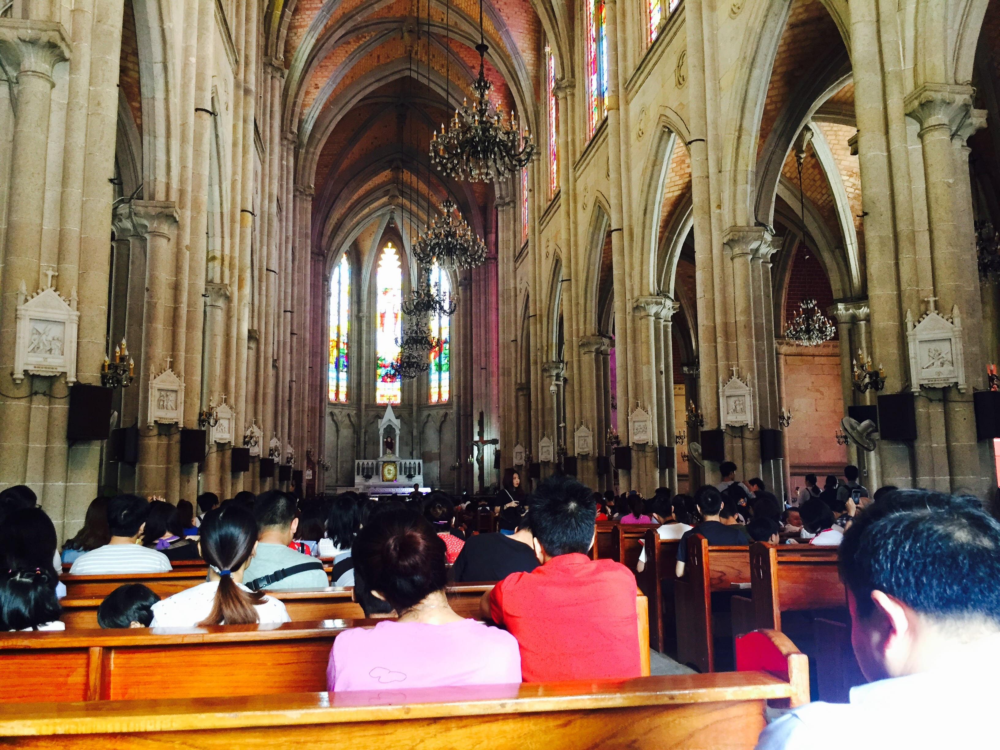</a>
                <div class="box-masonry-text"> 
                  <h4> <a href="detail.html"></a></h4>
                  <div class="box-masonry-desription">
                    <p>去的时候人很多，里面正在弥撒，进去参观了一下建筑内部，然后诚心的许了一个愿望，出来后围着他又饶了两圈仔细研究了一下就离开了。 </p>
                  </div>
                </div>
              </div>
            </div>
            <div class="col-md-6 col-lg-3 grid-item"> 
              <div class="box-masonry"> 
                <div class="box-masonry-text"> 
                  <h4> <a href="detail.html">沙面</a></h4>
                  <div class="box-masonry-desription">
                    <p>沙面是一个不可不去的地方，去之前无论看哪一个广州旅游攻略都能看到他的身影。沙面属于复古的欧式建筑群，很多人去参观，里面有一家号称广州最美的星巴克，整体是薄荷绿色的，有点像澳门的龙环葡韵，和沙面很好的搭配在了一起。 </p>
                  </div>
                </div>
              </div>
            </div>
            <div class="col-md-6 col-lg-3 grid-item"> 
              <div class="box-masonry"> <a href="img/portfolio/gzzl/16.jpg" title="" class="box-masonry-image with-hover-overlay pop-up">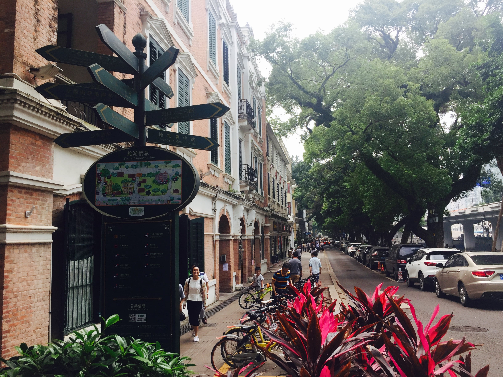
                <div class="box-masonry-hover-text-header"> 
                  <h4></h4>
                  <div class="box-masonry-desription">
                    <p>走在里面感觉整个人的节奏都绘慢下来享受。很幸运的是，当天参观的过程中，我们还遇到了一对新人在拍婚纱照，顿时整条街都是粉色泡泡，可见沙面的魅力。 </p>
                  </div>
                </div></a>
              </div>
            </div>
            <div class="col-md-6 col-lg-3 grid-item"> 
                <div class="box-masonry"> <a href="img/portfolio/gzzl/8.jpg" title="" class="box-masonry-image with-hover-overlay pop-up with-hover-icon">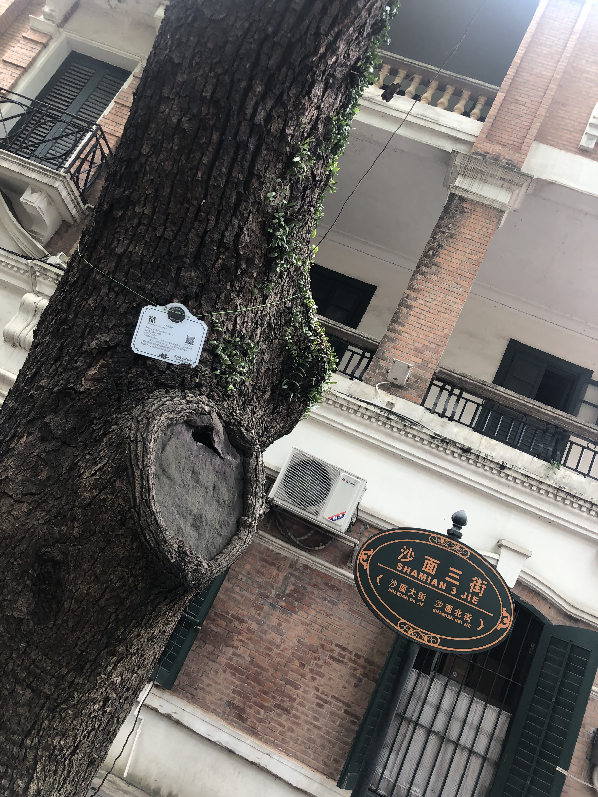</a>
                  
                </div>
              </div>
            <div class="col-md-6 col-lg-3 grid-item"> 
              <div class="box-masonry"> <a href="img/portfolio/gzzl/9.jpg" title="" class="box-masonry-image with-hover-overlay pop-up with-hover-icon">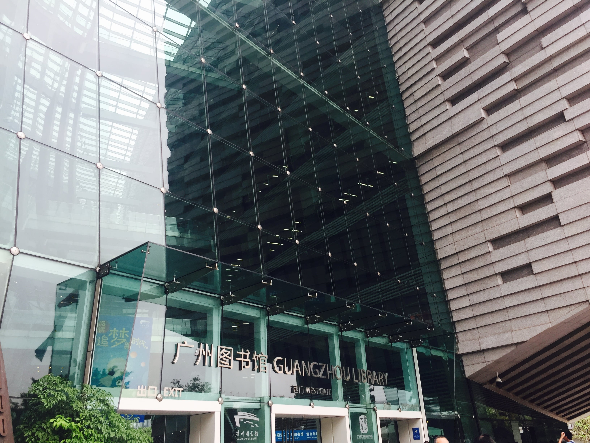</a>
                <div class="box-masonry-text"> 
                  <h4> <a href="detail.html">图书馆</a></h4>
                  <div class="box-masonry-desription">
                    <p>都说如果你想了解一个城市那么就一定要去这个城市的博物馆。我们先去了图书馆后去了博物馆，两馆相距不出200米。 </p>
                  </div>
                </div>
              </div>
            </div>
            <div class="col-md-6 col-lg-3 grid-item"> 
              <div class="box-masonry"> <a href="img/portfolio/gzzl/20.jpg" title="" class="box-masonry-image with-hover-overlay pop-up with-hover-icon">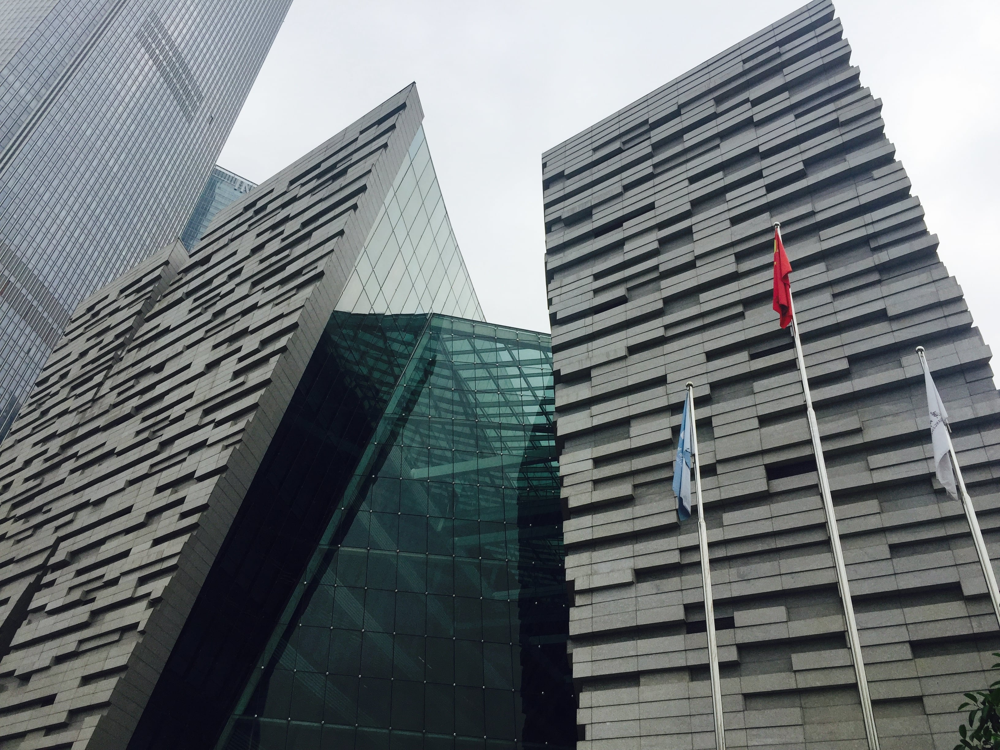</a>
                <div class="box-masonry-text"> 
                  
                  <div class="box-masonry-desription">
                    <p>令我震惊的是不仅广州图书馆的造型炫酷，而且里面的人也非同一般。开馆不到一个小时里面的座位就几乎坐满了，大家都在专心的做着自己的事情，有条不紊，丝毫没有受到节日氛围的影响，不由得让我心生敬佩，这个城市的人也是炫酷的人。 </p>
                  </div>
                </div>
              </div>
            </div>
            <div class="col-md-6 col-lg-3 grid-item"> 
              <div class="box-masonry"> <a href="img/portfolio/gzzl/7.jpg" title="" class="box-masonry-image with-hover-overlay pop-up with-hover-icon">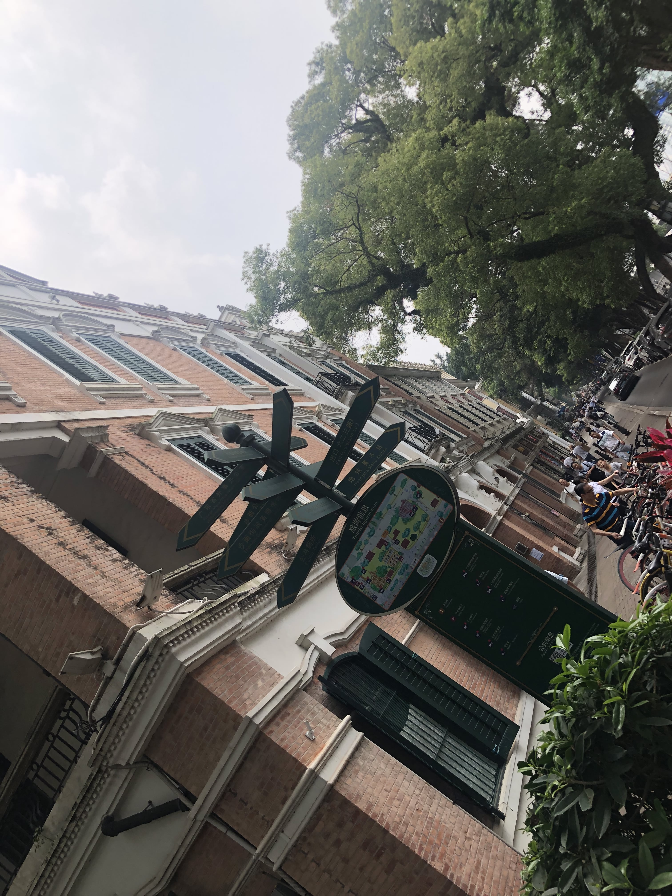</a>
               
              </div>
            </div>
            <div class="col-md-6 col-lg-3 grid-item"> 
              <div class="box-masonry"> <a href="img/portfolio/gzzl/18.jpg" title="" class="box-masonry-image with-hover-overlay pop-up">
                <div class="box-masonry-hover-text-header"> 
                  <h4>广州塔</h4>
                  <div class="box-masonry-desription">
                    <p>广州塔又名小蛮腰，是中国第一高塔，世界第二高塔，想必不用我说，每个去广州的人都会来这里打卡，最好的就是登上高层去领略整个广州的夜景，岂是一个美字了得。 </p>
                  </div>
                </div></a>
              </div>
            </div>
            <div class="col-md-6 col-lg-3 grid-item"> 
              <div class="box-masonry"> <a href="img/portfolio/gzzl/6.jpg" title="" class="box-masonry-image with-hover-overlay pop-up">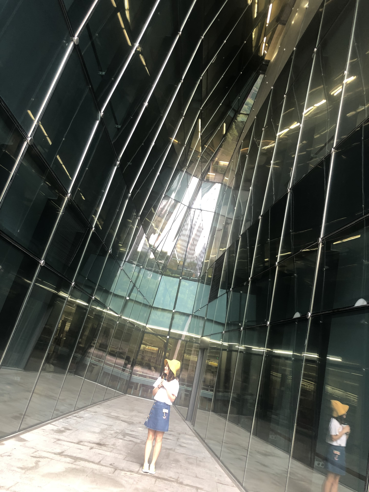</a>
                
              </div>
            </div>
            <div class="col-md-6 col-lg-3 grid-item"> 
                <div class="box-masonry"> <a href="img/portfolio/gzzl/5.jpg" title="" class="box-masonry-image with-hover-overlay pop-up">
                  <div class="box-masonry-hover-text-header"> 
                    <h4>北京路</h4>
                    <div class="box-masonry-desription">
                      <p>北京路步行街，现代化气息扑面而来，但街内依旧还有一些复古类建筑，这里有很多网红店，但是到了饭点排队人很多。 </p>
                    </div>
                  </div></a>
                </div>
              </div>
              <div class="col-md-6 col-lg-3 grid-item"> 
                  <div class="box-masonry"> <a href="img/portfolio/gzzl/23.jpg" title="" class="box-masonry-image with-hover-overlay pop-up with-hover-icon">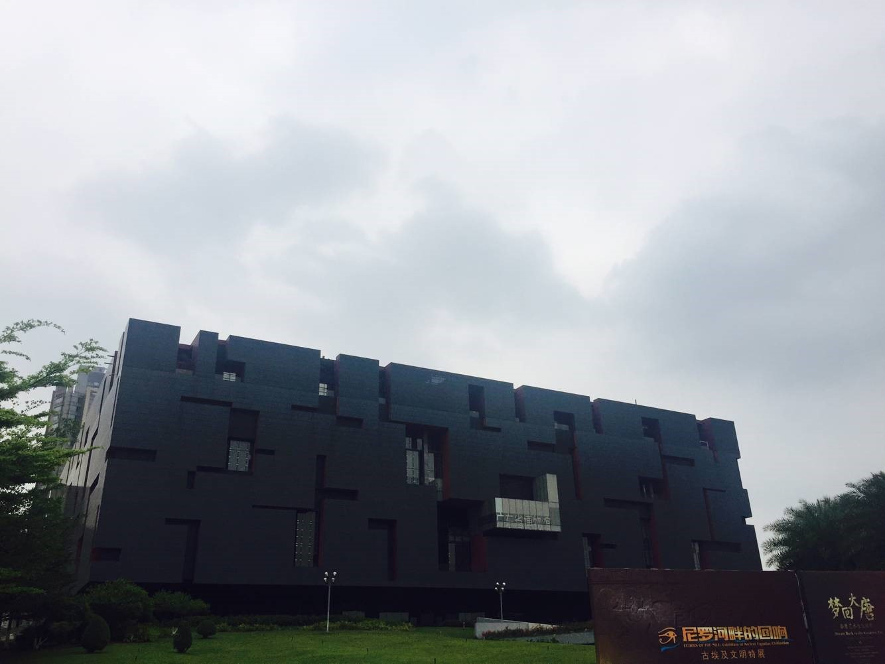</a>
                    <div class="box-masonry-text"> 
                        <h4>博物馆</h4>
                      <div class="box-masonry-desription">
                        <p>广州省博物馆，去主要还是以学习为主，大师设计的造型果然很值得研究借鉴，里面文化气息浓厚，有的展馆还会有一些表演等，值得细细品味。 </p>
                      </div>
                    </div>
                  </div>
              </div>
              <div class="col-md-6 col-lg-3 grid-item"> 
                  <div class="box-masonry"> 
                    <div class="box-masonry-text"> 
                      
                      <div class="box-masonry-desription">
                        <p>总之广州之旅很累很开心，有人说要么读书要么旅行，反正身体和心灵总有一个要在路上，那就趁着年轻多出去看一看，反正，世界那么大，我们还那么热情。 </p>
                      </div>
                    </div>
                  </div>
                </div>
          </div>
        </div>
        <!--   *** PORTFOLIO END ***-->
      </div>
      <hr>
      <div class="gallery-section">
        <div class="inner-width">
          <h1>照片墙</h1>
          <div class="border"></div>
          <div class="gallery">
            <a href="img/portfolio/gzzl/1.jpg" class="image">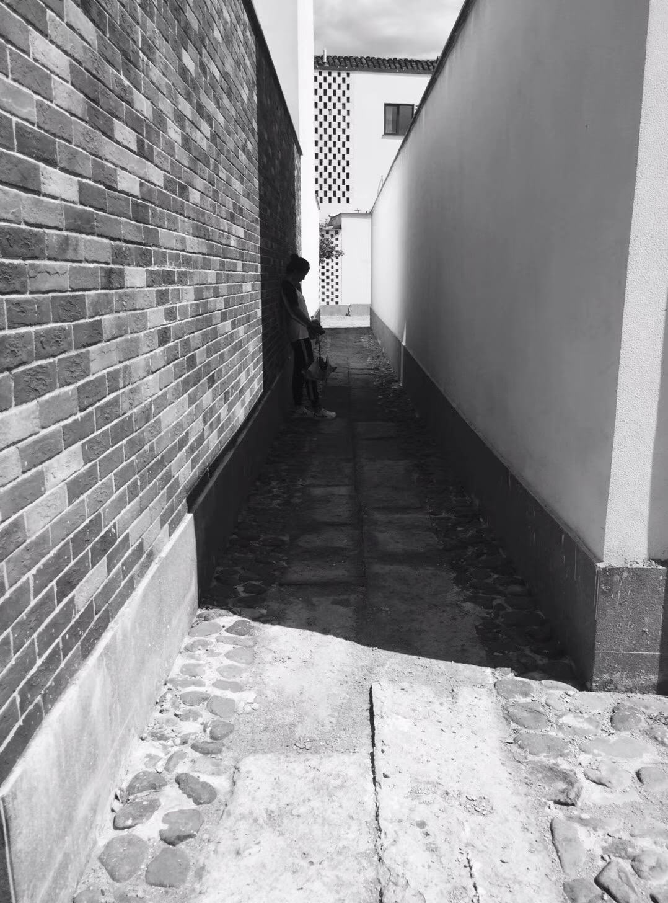<div class="image-before"><div class="gallery-icons"><i class="foot-icon fas fa-heart"></i><i class="foot-icon fas fa-comment"></i><i class="foot-icon fas fa-share"></i></div></div></a>
            <a href="img/portfolio/gzzl/2.jpg" class="image"><div class="image-before"><div class="gallery-icons"><i class="foot-icon fas fa-heart"></i><i class="foot-icon fas fa-comment"></i><i class="foot-icon fas fa-share"></i></div></div></a>
            <a href="img/portfolio/gzzl/3.jpg" class="image"><div class="image-before"><div class="gallery-icons"><i class="foot-icon fas fa-heart"></i><i class="foot-icon fas fa-comment"></i><i class="foot-icon fas fa-share"></i></div></div></a>
            <a href="img/portfolio/gzzl/4.jpg" class="image"><div class="image-before"><div class="gallery-icons"><i class="foot-icon fas fa-heart"></i><i class="foot-icon fas fa-comment"></i><i class="foot-icon fas fa-share"></i></div></div></a>
            <a href="img/portfolio/gzzl/5.jpg" class="image"><div class="image-before"><div class="gallery-icons"><i class="foot-icon fas fa-heart"></i><i class="foot-icon fas fa-comment"></i><i class="foot-icon fas fa-share"></i></div></div></a>
            <a href="img/portfolio/gzzl/6.jpg" class="image"><div class="image-before"><div class="gallery-icons"><i class="foot-icon fas fa-heart"></i><i class="foot-icon fas fa-comment"></i><i class="foot-icon fas fa-share"></i></div></div></a>
            <a href="img/portfolio/gzzl/7.jpg" class="image"><div class="image-before"><div class="gallery-icons"><i class="foot-icon fas fa-heart"></i><i class="foot-icon fas fa-comment"></i><i class="foot-icon fas fa-share"></i></div></div></a>
            <a href="img/portfolio/gzzl/8.jpg" class="image"><div class="image-before"><div class="gallery-icons"><i class="foot-icon fas fa-heart"></i><i class="foot-icon fas fa-comment"></i><i class="foot-icon fas fa-share"></i></div></div></a>
            <a href="img/portfolio/gzzl/9.jpg" class="image"><div class="image-before"><div class="gallery-icons"><i class="foot-icon fas fa-heart"></i><i class="foot-icon fas fa-comment"></i><i class="foot-icon fas fa-share"></i></div></div></a>
            <a href="img/portfolio/gzzl/10.jpg" class="image">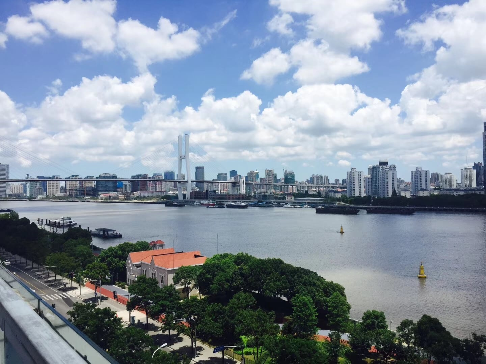<div class="image-before"><div class="gallery-icons"><i class="foot-icon fas fa-heart"></i><i class="foot-icon fas fa-comment"></i><i class="foot-icon fas fa-share"></i></div></div></a>
            <a href="img/portfolio/gzzl/11.jpg" class="image"><div class="image-before"><div class="gallery-icons"><i class="foot-icon fas fa-heart"></i><i class="foot-icon fas fa-comment"></i><i class="foot-icon fas fa-share"></i></div></div></a>
            <a href="img/portfolio/gzzl/12.jpg" class="image"><div class="image-before"><div class="gallery-icons"><i class="foot-icon fas fa-heart"></i><i class="foot-icon fas fa-comment"></i><i class="foot-icon fas fa-share"></i></div></div></a>
            <a href="img/portfolio/gzzl/13.jpg" class="image"><div class="image-before"><div class="gallery-icons"><i class="foot-icon fas fa-heart"></i><i class="foot-icon fas fa-comment"></i><i class="foot-icon fas fa-share"></i></div></div></a>
            <a href="img/portfolio/gzzl/14.jpg" class="image"><div class="image-before"><div class="gallery-icons"><i class="foot-icon fas fa-heart"></i><i class="foot-icon fas fa-comment"></i><i class="foot-icon fas fa-share"></i></div></div></a>
            <a href="img/portfolio/gzzl/15.jpg" class="image"><div class="image-before"><div class="gallery-icons"><i class="foot-icon fas fa-heart"></i><i class="foot-icon fas fa-comment"></i><i class="foot-icon fas fa-share"></i></div></div></a>
            <a href="img/portfolio/gzzl/16.jpg" class="image"><div class="image-before"><div class="gallery-icons"><i class="foot-icon fas fa-heart"></i><i class="foot-icon fas fa-comment"></i><i class="foot-icon fas fa-share"></i></div></div></a>
            <a href="img/portfolio/gzzl/17.jpg" class="image"><div class="image-before"><div class="gallery-icons"><i class="foot-icon fas fa-heart"></i><i class="foot-icon fas fa-comment"></i><i class="foot-icon fas fa-share"></i></div></div></a>
            <a href="img/portfolio/gzzl/18.jpg" class="image"><div class="image-before"><div class="gallery-icons"><i class="foot-icon fas fa-heart"></i><i class="foot-icon fas fa-comment"></i><i class="foot-icon fas fa-share"></i></div></div></a>
            <a href="img/portfolio/gzzl/19.jpg" class="image"><div class="image-before"><div class="gallery-icons"><i class="foot-icon fas fa-heart"></i><i class="foot-icon fas fa-comment"></i><i class="foot-icon fas fa-share"></i></div></div></a>
            <a href="img/portfolio/gzzl/20.jpg" class="image"><div class="image-before"><div class="gallery-icons"><i class="foot-icon fas fa-heart"></i><i class="foot-icon fas fa-comment"></i><i class="foot-icon fas fa-share"></i></div></div></a>
            <a href="img/portfolio/gzzl/21.jpg" class="image"><div class="image-before"><div class="gallery-icons"><i class="foot-icon fas fa-heart"></i><i class="foot-icon fas fa-comment"></i><i class="foot-icon fas fa-share"></i></div></div></a>
            <a href="img/portfolio/gzzl/22.jpg" class="image"><div class="image-before"><div class="gallery-icons"><i class="foot-icon fas fa-heart"></i><i class="foot-icon fas fa-comment"></i><i class="foot-icon fas fa-share"></i></div></div></a>
            <a href="img/portfolio/gzzl/23.jpg" class="image"><div class="image-before"><div class="gallery-icons"><i class="foot-icon fas fa-heart"></i><i class="foot-icon fas fa-comment"></i><i class="foot-icon fas fa-share"></i></div></div></a>

            <!-- <script src="js/creatWall.js"></script> -->
          </div>
        </div>

      </div>

    </div>
  </div>
  <div id="back-to-top" style="display: none">
      <i class="fa fa-angle-double-up" aria-hidden="true"></i> 回到顶部
  </div>
  <!-- JavaScript files-->

  <!-- <script src="vendor/jquery/jquery.min.js"></script> -->
  <script src="https://cdnjs.cloudflare.com/ajax/libs/jquery/3.3.1/jquery.min.js"></script>
  <script src="https://cdnjs.cloudflare.com/ajax/libs/magnific-popup.js/1.1.0/jquery.magnific-popup.min.js"></script>
  <script src="vendor/popper.js/umd/popper.min.js"> </script>
  <script src="vendor/bootstrap/js/bootstrap.min.js"></script>
  <script src="vendor/jquery.cookie/jquery.cookie.js"> </script>
  <script src="vendor/owl.carousel/owl.carousel.min.js"></script>
  <script src="vendor/masonry-layout/masonry.pkgd.min.js"></script>
  <script src="js/front.js"></script>
  <script>
      $('.pop-up').magnificPopup({
          type: 'image',
          gallery:{
            enabled: true
          }
      });
      $('.image').magnificPopup({
        type: 'image',
        gallery:{
          enabled: true
        }
    });
  </script>
  <script>  
      var position=$(".gallery-section")[0].offsetTop;
      var click_element=$(".btn.btn-primary");
      click_element.click(function () {
          $("html, body").animate({scrollTop: position-70 }, 600);
          return false;
      });
  </script>
  <script>
      $(document).ready(function () {
        $(window).scroll(function () {
            if ($(this).scrollTop() > 100) {
                $('#back-to-top').fadeIn();
            } else {
                $('#back-to-top').fadeOut();
            }
        });
        $('#back-to-top').click(function () {
            $("html, body").animate({scrollTop: 0}, 600);
            return false;
        });
    
    
        $("#toggle").click(function () {
            $(this).toggleClass("on");
            $("#menu").slideToggle();
        });
    
    });
  </script>
</body>